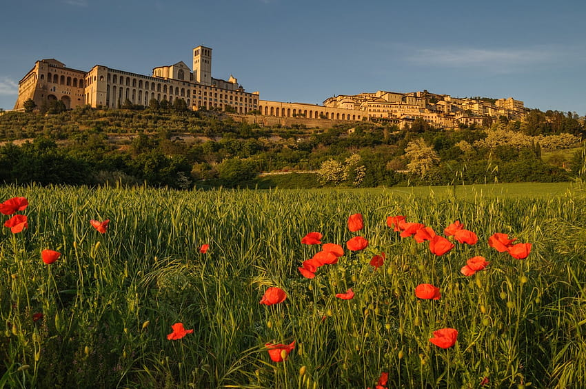

로마와 피렌체 사이에 위치한 마을 아씨시. 중세 유럽 시대로 온 듯 생생한 옛 건축물과 거리마다 있는 예쁜 성물방,
망고 색깔로 선명하게 빛나는 석양, 별빛이 쏟아져 내릴 것만 같은 밤하늘까지.
내가 묵었던 숙소는 옛 수도원을 개조하여 만들어진 세나콜로 호텔. 높은 하늘과 정원을 구경할 수 있는 중정이 첫 눈에 들어왔다. 이 중정을 중심으로 건물이 구성되어 있다. 중정 한가운데는 세나콜로 호텔 최고의 포토존이자 휴식 공간. 이런 숙소라면 유럽까지 와서도 호캉스를 즐겨보고 싶다는 생각이 들기도 한다.
여느 호텔이 그렇듯 창문이 정말 커다랗다. 하지만 창문 너머 보이는 아씨시의 고즈넉한 풍경이야말로 세나콜로 호텔이 가진 막강한 장점이다. 아침에 눈을 뜨면 침대 옆 창문으로 비치는 밝은 햇살이 하루의 시작을 기분 좋게 만든다.
프란체스코 성인이 잠들어있는 성 프란체스코 대성당. 어마어마한 규모를 자랑하며, 꼭대기에 있는 성모 마리아상만 해도 무려 9미터에 달한다. 재밌는 점은 성당 안에 작은 성당이 하나 더 존재한다는 사실이다. 성 프란체스코가 실제 생활하던 오두막 성당을 중심으로 감싸서 거대한 대성당을 덧대어 지었기 때문에 지금과 같이 신기한 구조가 만들어졌다.
아씨시가 더할 나위 없이 행복했던 가장 큰 이유를 하나 꼽자면 맑은 공기와 싱그러운 풀빛이 어우러져 만들어낸 자연친화적인 풍경이다. 첨단 기술의 발달은 삶의 질을 높여준다고 맹신하고 있던 나에게, 아씨시의 환경은 편안하고 여유로운 삶의 정의를 다시 한 번 내려주었다. 값비싼 외제차나 으리으리한 고층 빌딩이 없어도 괜찮다. 드넓은 올리브밭과 밤하늘을 멍하니 구경하는 것만으로 나는 충분한 편안함과 여유를 즐기고 있었다.
20대가 지나기 전에 이탈리아는 반드시 한 번 더 오기로 나 자신과 약속했다. 그래서 아씨시를 떠나자마자 로마 트레비 광장으로 달려가 분수에 1유로 동전 하나 던지고 왔다. 트레비 분수를 등지고 동전을 던져서 분수에 빠뜨리면 꼭 이탈리아에 다시 올 수 있다나. 물론 이탈리아에 멋지고 환상적인 곳은 널렸지만 이렇게 여유가 넘치는 분위기도 상당히 매력적인 것 같다.
다들 아씨시 한 번 들르고 가세요♡